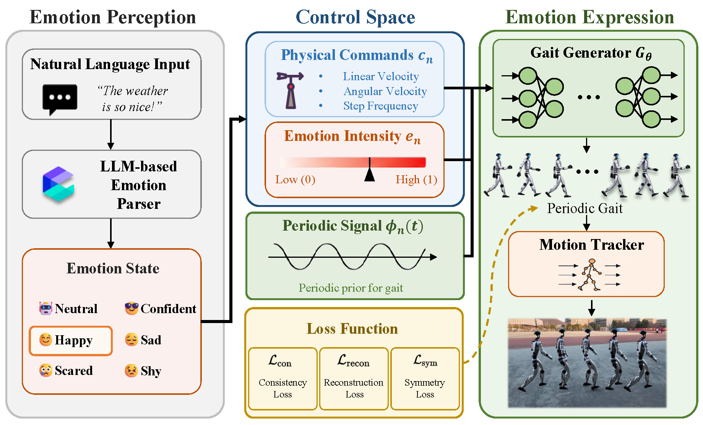
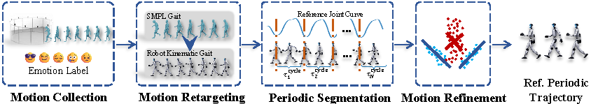

Affective Computing · Gait Control · Text-Driven Motion · Humanoid
1 Nanjing University
2 Key Laboratory of Optoelectronic Devices and Systems with Extreme Performances of MOE, Nanjing University
Results
Results
Results
Method

